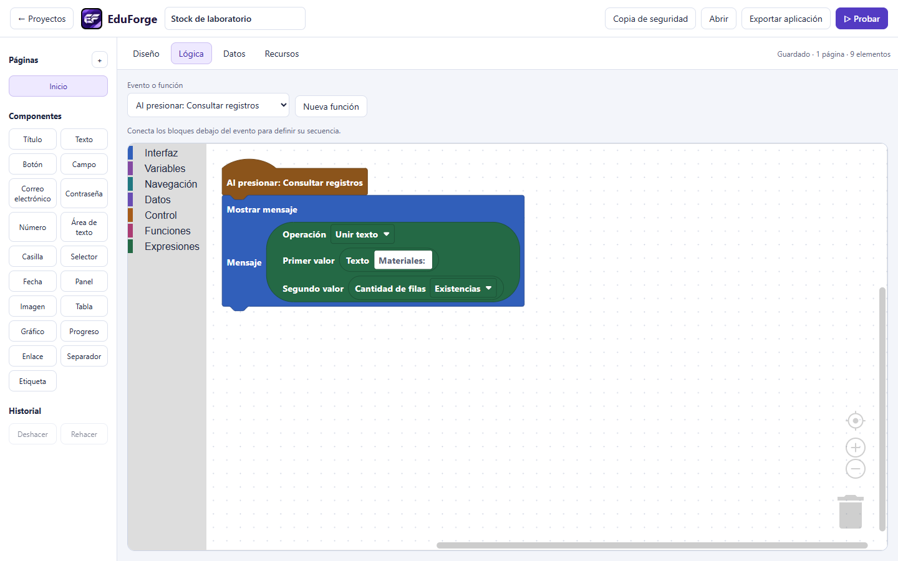

Eventos y bloques
Conecta el botón Guardar con una acción y verifica que se ejecuta.
Crea el evento
- Selecciona el botón Guardar y pulsa Editar lógica.
- Selecciona el evento Al presionar de ese botón.
- Arrastra Mostrar mensaje desde Interfaz y conéctalo debajo del bloque del evento.


Comprueba el flujo
Escribe Material registrado como mensaje de prueba. Pulsa Probar y luego Guardar en la app. Si no se ejecuta, comprueba que el bloque esté unido al evento del botón correcto.
Añade una condición
Usa Si / si no para elegir qué acciones ejecutar según una condición. Conecta las acciones de cada caso a su rama.